IKANDY listens to whatever you’re playing and paints it across your screen — every beat, every drop, every note, alive in real time. Free. No setup. Just music you can see.
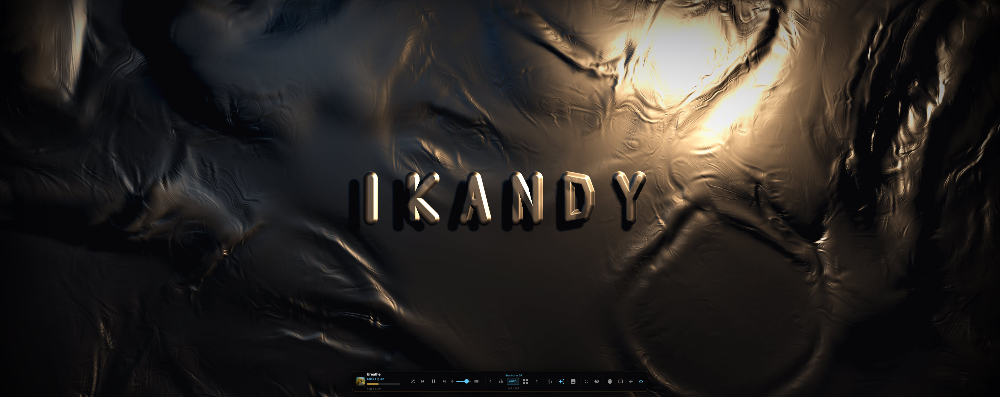
Anything that publishes to Windows Media Controls works through the Now Playing source — no setup, no auth.
1. Open Spotify, YouTube, or any other music app. → 2. Open IKANDY and pick how it should listen. → 3. Hit play. Watch your screen come alive.
Feel the music. See the magic. IKANDY listens to whatever you’re already playing and turns it into a living, breathing visual — 350+ MilkDrop presets, custom audio-reactive scenes, AI-generated shaders, and cinematic FX overlays. Free. Offline. No subscription.
Real screenshots — every visual reacts to your music live
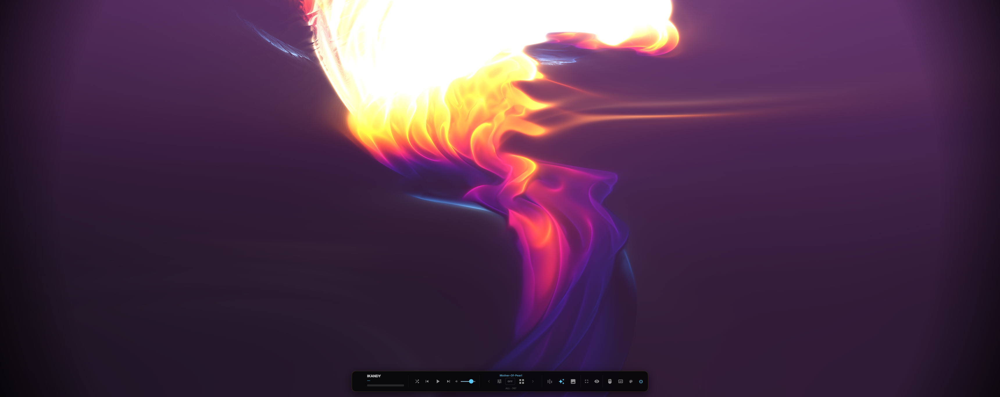
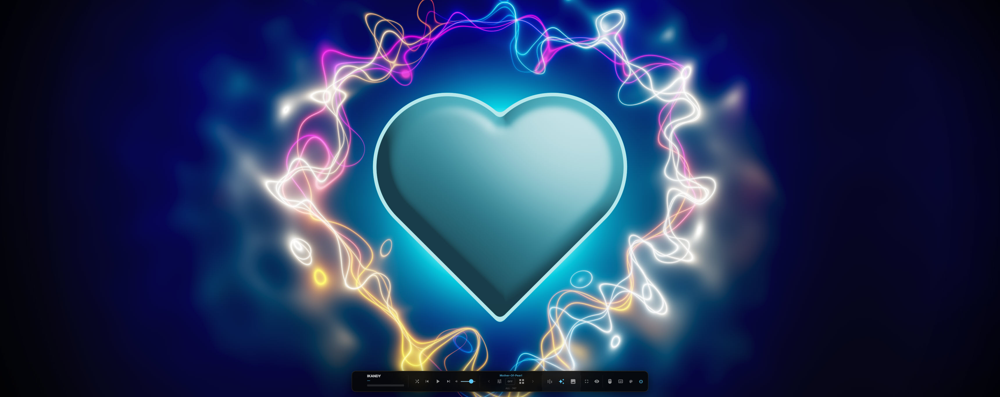
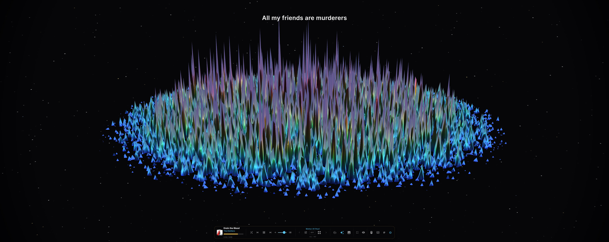
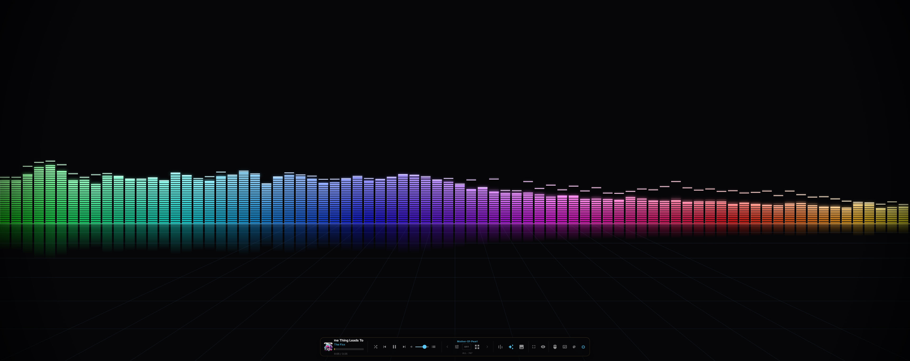
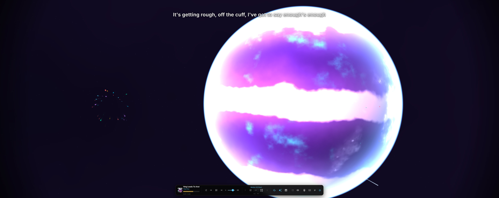
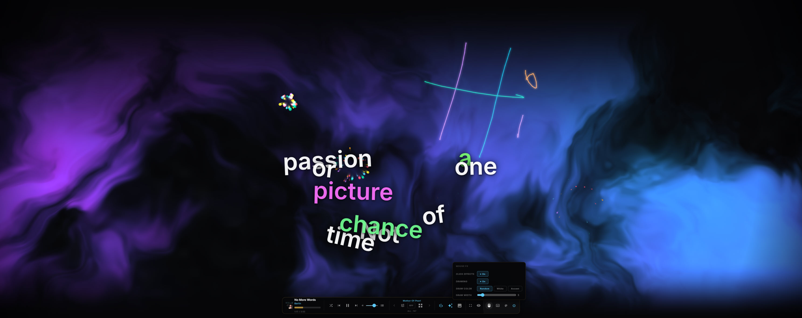
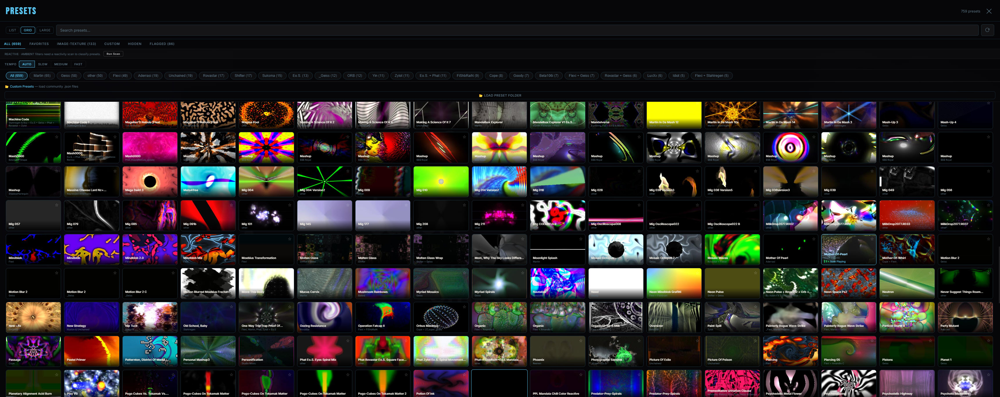
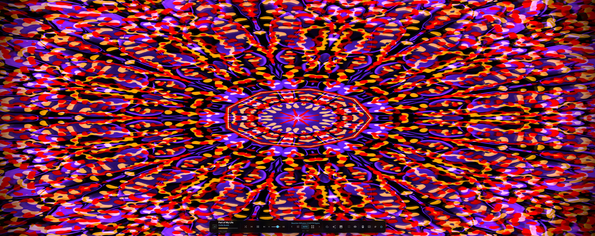
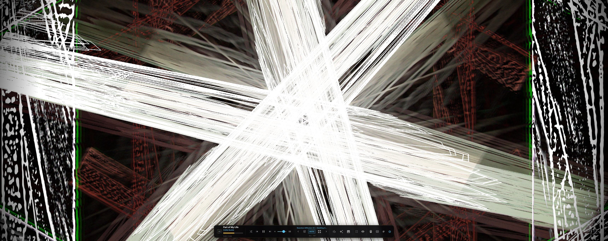
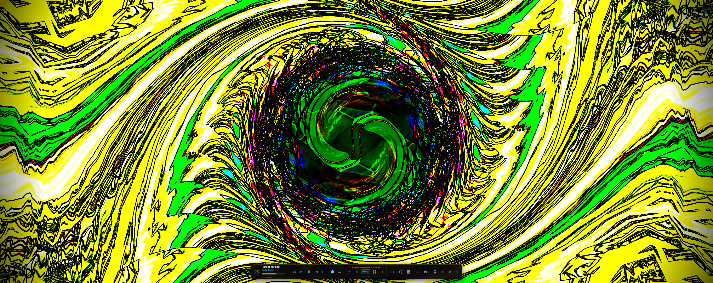
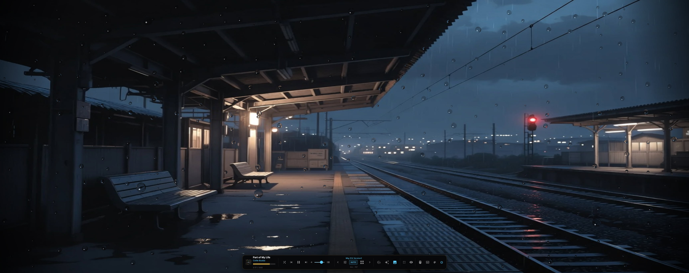
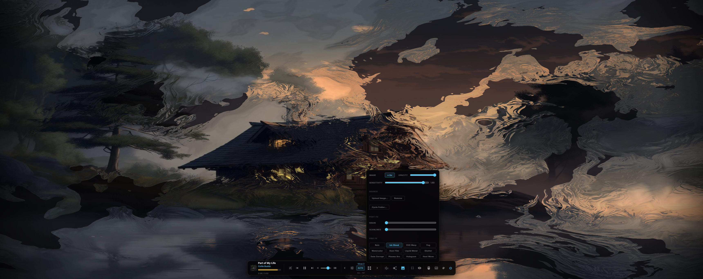
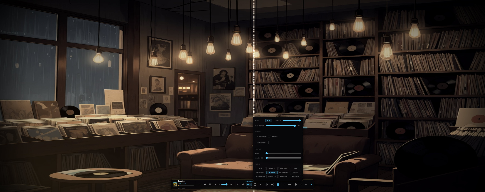
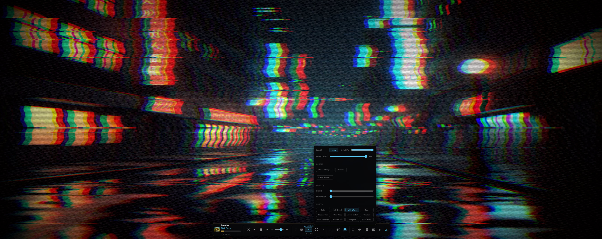
▶ Watch The Demo
A walkthrough of what IKANDY actually does — visuals, scenes, FX, lyrics, all in motion.
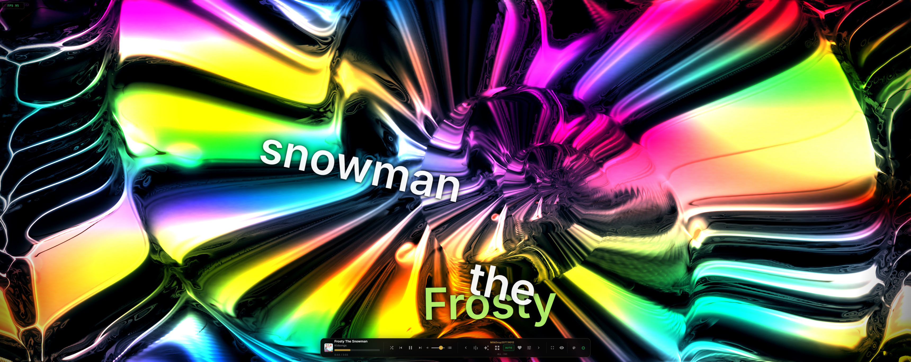
01 — Visualizer
Powered by Butterchurn — the WebGL port of Winamp's legendary MilkDrop engine. Every preset reacts to your music in real time. Auto-cycle switches them per track automatically.
02 — Control Panel
Speed, Reactivity, Smoothness, FX strength — all in a clean collapsible sidebar. Pick your theme from 6 accent colours. Upload a background image or cycle a whole folder.
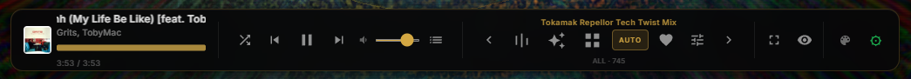
03 — FX Shaders
Layer cinematic FX over your background image. Adjust strength on the fly. Combine with grain and scanlines for maximum vibe.
04 — Custom Scenes
Eight 2D audio-reactive scenes and six 3D raymarched scenes, all built from the ground up. Real-time FFT drives every pixel. Plus three WebGPU-native scenes — and an AI studio to build your own.
2D Audio-Reactive
3D Raymarched
WebGPU Native
05 — Audio Sources
Connect whatever you’re playing. Each source offers a different feature set — richer integrations on top, simpler ones below.
Full Spotify integration with PKCE OAuth. Track info, album art, synced lyrics, playlist browser with search, and full playback control. Premium account required for transport — Free accounts get track info only.
Connects via the foo_beefweb component for the full experience — playlist browse with search, every shuffle mode foobar supports, transport, album art, lyrics. The audiophile’s player, fully integrated.
Connect to VLC’s web interface for transport — play, pause, skip, shuffle on/off — with album art and synced lyrics. No library browse.
Reads whatever app is currently playing music on Windows — Spotify desktop, YouTube Music, Apple Music, browser tabs, anything that publishes to Windows Media Controls. Transport works (subject to what each source app supports). No browse, no shuffle, no album art.
Lock the visualiser to one app’s audio — Spotify only, not the game, not Discord, not notifications. WASAPI loopback isolates a single Windows process so what you see reacts to exactly what you want, even when half a dozen apps are playing sound. Settings → Source → Per-Process Capture.
06 — Smart Auto
Smart Auto watches every audio-producing process on your PC and the metadata coming from connected backends, then picks the right source without you having to touch anything. Switch from Spotify to YouTube — IKANDY follows.
WASAPI loopback isolates the audio of a single app — no system mix bleed, no mic bleed. Spotify, YouTube, VLC, anything.
Amplitude and metadata signals are combined to determine which process is the active music source at any moment.
When multiple backends are connected, the metadata arbiter resolves conflicts and hands visualisation control to the correct source.
07 — Lyrics
IKANDY fetches synced lyrics automatically. But if a song has no lyrics — or you wrote your own — you can paste plain text and tap the timestamps live as the music plays.
One line at a time, centred. Clean, karaoke-style. Perfect for recording or reading along.
Words explode onto screen, float in zero-gravity, collide and bounce to the beat. Chaotic and beautiful.
Paste any lyrics. Hit play. Tap spacebar on each line as it hits — IKANDY stamps the timestamp live. Drag dots on the timeline to fine-tune. Save as LRC. Works for any song, any language, any source.
08 — Mouse & Touch
Every mouse action creates a visual effect. Draw on the canvas, send ripples exploding outward, charge a ring and release it — or just move and watch the Aurora scene bend toward you.
Left-click spawns an expanding ring. Right-click collapses an implosion. Hold right-click to charge a ring that explodes outward on release — intensity scales with how long you held.
Right-click and drag to paint freehand lines over the visualizer in screen-blend mode. Both buttons simultaneously clears the canvas. Random, White, or Accent color. Brush width 1–40px.
A fading 28-point streak follows your movement, colored to match the current theme. Middle-click opens a quick-access overlay for presets, scenes, and FX without touching the sidebar.
09 — AI Shader Studio
Type what you want to see — "neon audio-reactive waves", "underwater bioluminescent jellyfish", anything. IKANDY generates a live GPU shader from your words and plays it immediately. If it fails, IKANDY silently fixes it and tries again. You never see an error.
Generate fragment shaders in both GLSL (WebGL) and WGSL (WebGPU). Each type has its own Bass, Mid, Treble, Speed, and Intensity sliders that tune the shader live.
GPU compile errors are captured and silently fed back to the AI with a fix request — up to 2 automatic retries before asking you to intervene. Most shaders just work first time.
Every saved shader stores its original prompt, author, license, and an auto-captured thumbnail — ready to share, import from Shadertoy, or upload to a future community gallery.
10 — Spout Output
IKANDY publishes its rendered output as a real-time Spout sender — pixel-perfect, zero-latency, GPU-shared. No screen capture, no recording loop. Just pure visuals piped straight into your streaming or VJ rig.
Add the free obs-spout2 plugin, drop in a Spout2 Capture source, pick IKANDY. Your visuals are now a live OBS scene — ready to stream, record, or composite over your camera.
Resolume, MadMapper, TouchDesigner, vMix — anything that speaks Spout2 can receive IKANDY. Map it to projectors, LED walls, holograms. The visualiser becomes a live VJ deck.
Pure GPU-to-GPU texture sharing — not a screen-capture detour. 0.5ms per frame, 0 dropped frames at 60fps 1080p. Pick 15 / 24 / 30 / 60 FPS in Settings → Video.
11 — Word On The Street
Real reactions from real humans who fired it up and let it rip.
Ohh man this app is making me happy!!! In a world that demands constant attention, this just lets me chill and vibe out! Love it — take me to your leader!
Okay, this thing is f*^&ing awesome. 49 inch curved monitor, just damn.
Windows 10/11 · No Subscription
↓ Download for Windows
~75MB · Windows 10/11 · Free · Open source — you can read every line on GitHub.
You’ll need your own free Spotify Client ID for Spotify features.